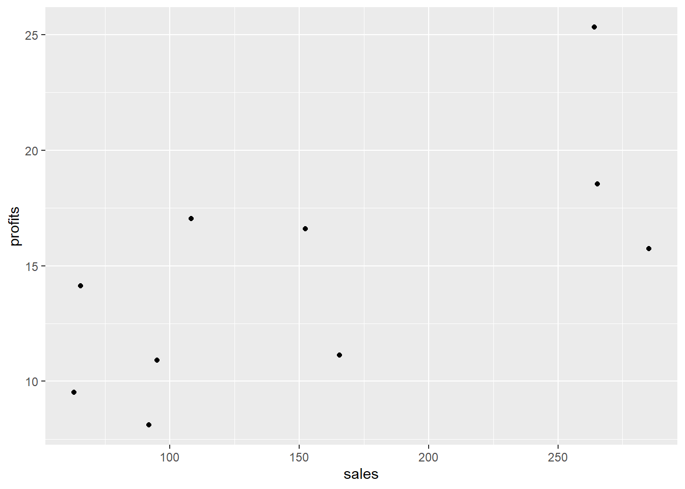
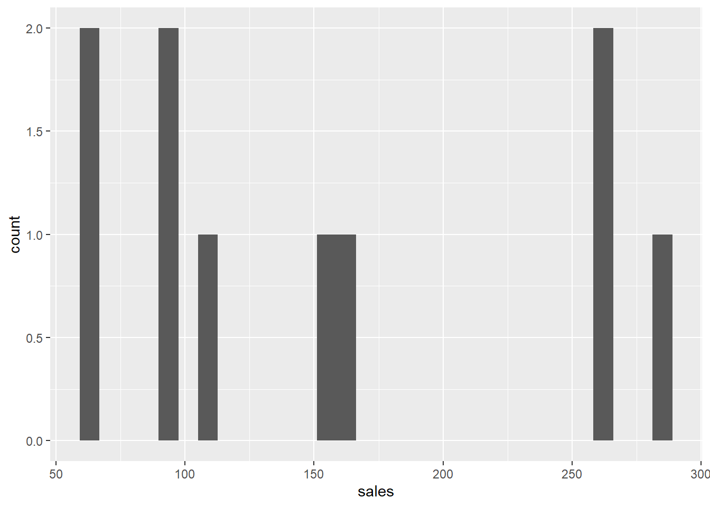
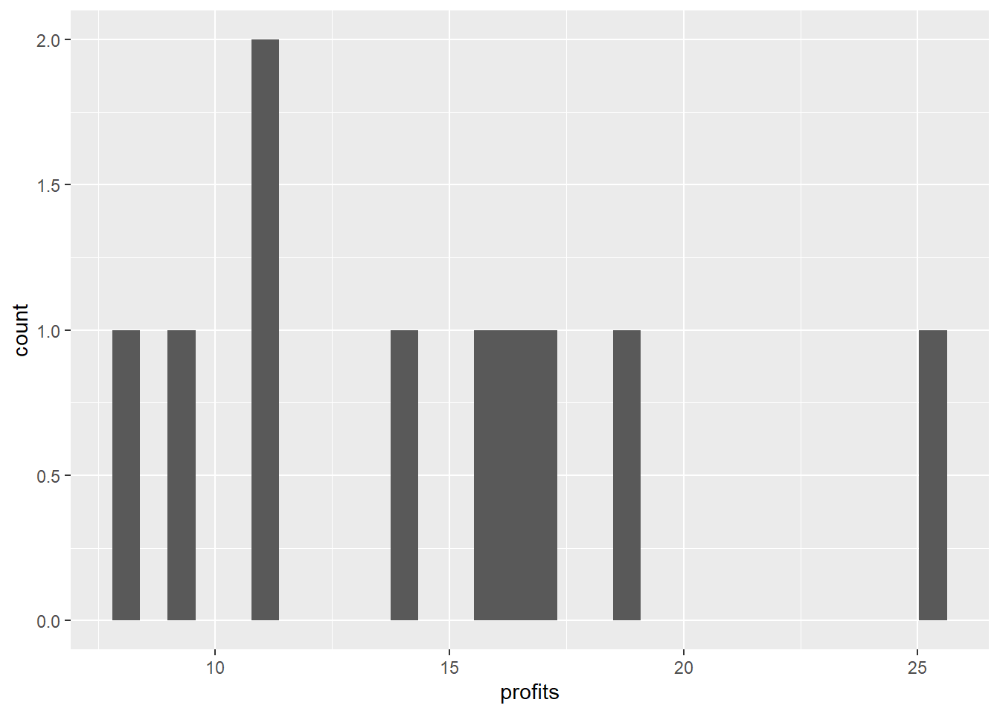
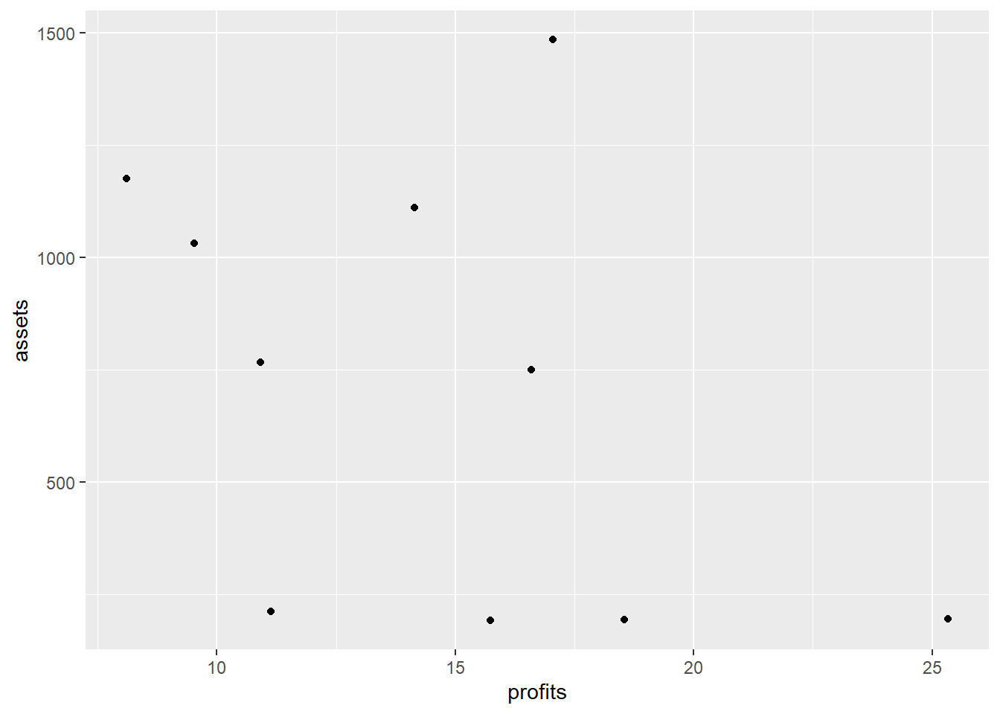
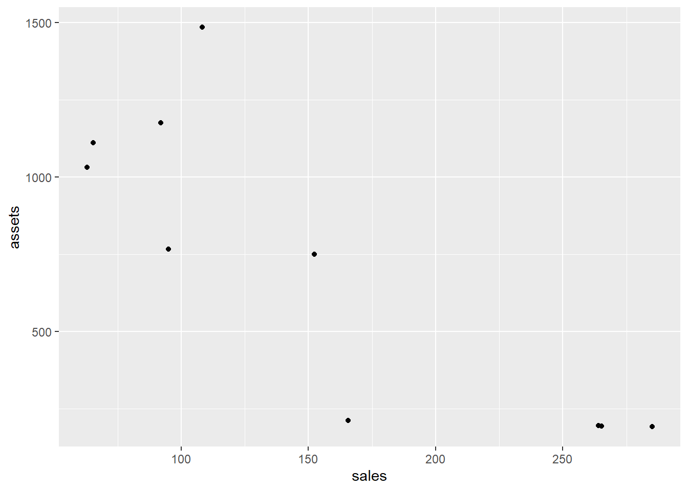
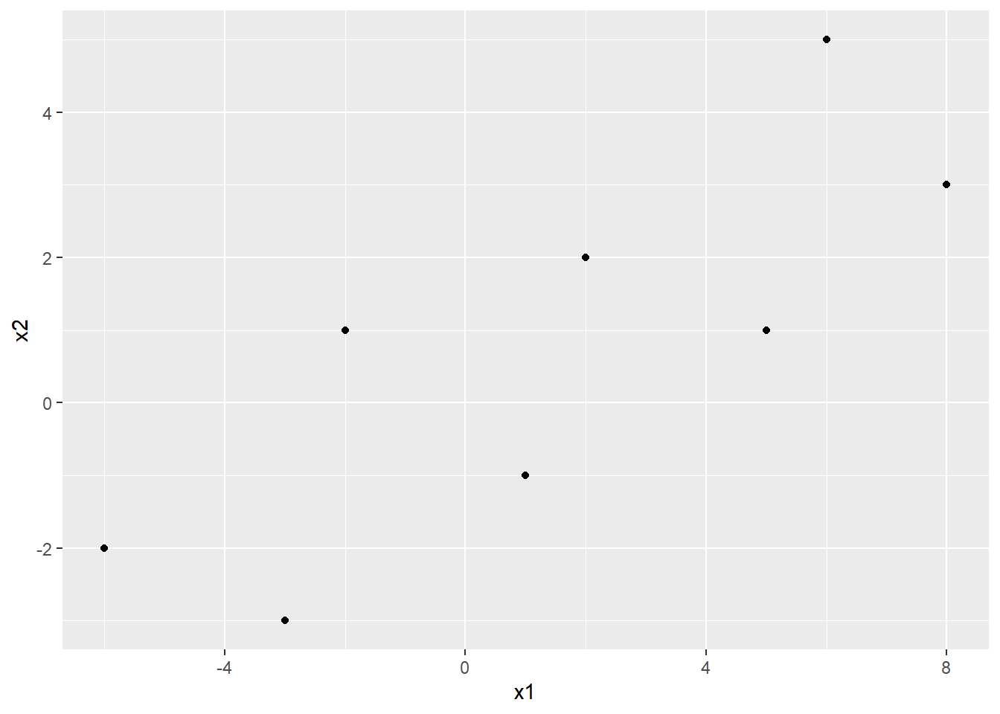
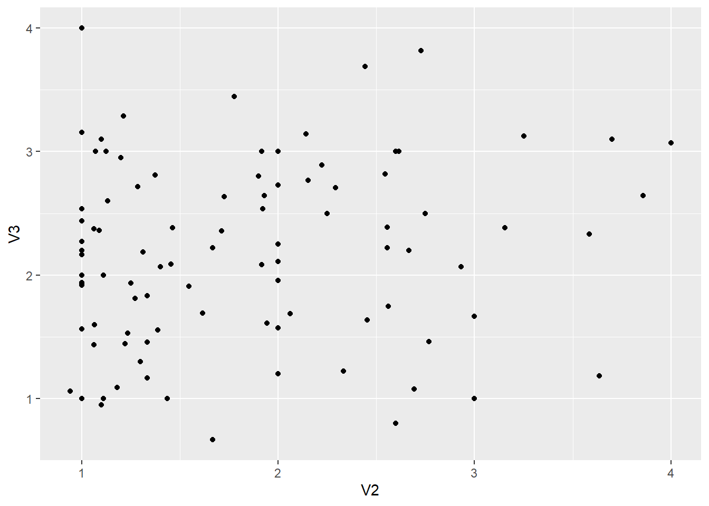
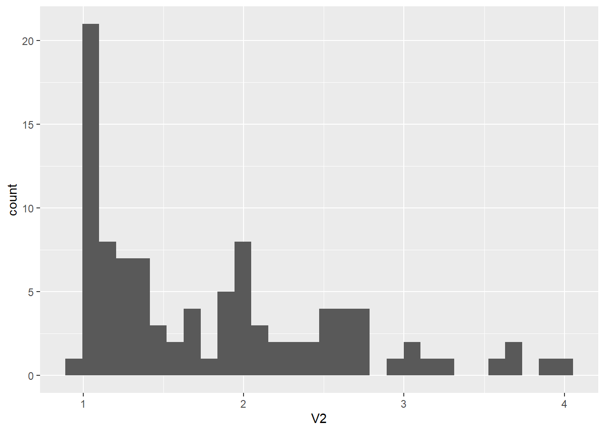
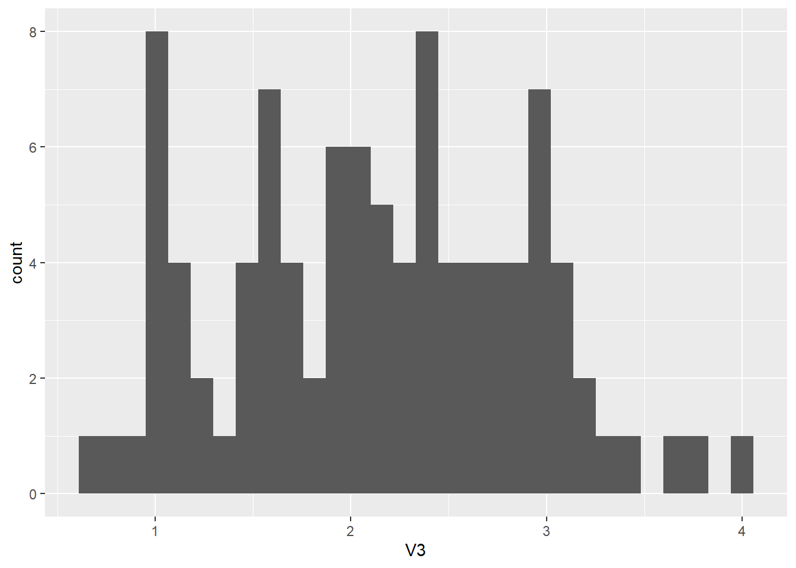

x1 = c(3,4,2,6,8,2,5)
x2 = c(5,5.5,4,7,10,5,7.5)
x1bar = sum(x1) / 7
x2bar = sum(x2) / 7
s11 = sum((x1 - x1bar)^2) / 7
s22 = sum((x2 - x2bar)^2) / 7
s12 = sum((x1 - x1bar) * (x2 - x2bar)) / 7HW1 Mason Holcombe
1
x1bar = 4.285714
x2bar = 6.285714
s11 = 4.204082
s22 = 3.561224
s12 = 3.704082
4
df = data.frame(
company = c(
"Citigroup",
"General Electric",
"American Intl Group",
"Bank of America",
"HSBC Group",
"ExxonMobil",
"Royal Dutch/Shell",
"BP",
"ING Group",
"Toyota Motor"
),
sales = c(108.28, 152.36, 95.04, 65.45, 62.97, 263.99, 265.19, 285.06, 92.01, 165.68),
profits = c(17.05, 16.59, 10.91, 14.14, 9.52, 25.33, 18.54, 15.73, 8.10, 11.13),
assets = c(1484.10, 750.33, 766.42, 1110.46, 1031.29,195.26, 193.83, 191.11, 1175.16, 211.15
)
)library(ggplot2)Warning: package 'ggplot2' was built under R version 4.5.2ggplot(df, aes(x = sales, y = profits)) +
geom_point()
ggplot(df, aes(x = sales)) +
geom_histogram()`stat_bin()` using `bins = 30`. Pick better value `binwidth`.
ggplot(df, aes(x = profits)) +
geom_histogram()`stat_bin()` using `bins = 30`. Pick better value `binwidth`.
There seems to be correlation between sales and profits. This is seen in the linear relationship in the scatter plot.
x1 = df$sales
x2 = df$profits
n = length(x1)
x1bar = sum(x1) / n
x2bar = sum(x2) / n
s11 = sum((x1 - x1bar)^2) / n
s22 = sum((x2 - x2bar)^2) / n
s12 = sum((x1 - x1bar) * (x2 - x2bar)) / n
r12 = s12 / sqrt(s11 * s22)x1bar = 155.603
x2bar = 14.704
s11 = 6728.807
s22 = 23.5712
s12 = 273.256
r2 = 0.6861
68.61% of the variation in profits is explained in the variation seen in sales
5
ggplot(df, aes(x = profits, y = assets)) +
geom_point()
ggplot(df, aes(x = sales, y = assets)) +
geom_point()
x1 = df$sales
x2 = df$profits
x3 = df$assets
n = length(x1)
x1bar = sum(x1) / n
x2bar = sum(x2) / n
x3bar = sum(x3) / n
xbar = c(x1bar, x2bar, x3bar)
s11 = sum((x1 - x1bar)^2) / n
s22 = sum((x2 - x2bar)^2) / n
s33 = sum((x3 - x3bar)^2) / n
s12 = sum((x1 - x1bar) * (x2 - x2bar)) / n
s13 = sum((x1 - x1bar) * (x3 - x3bar)) / n
s23 = sum((x2 - x2bar) * (x3 - x3bar)) / n
S = matrix(c(
s11, s12, s13,
s12, s22, s23,
s13, s23, s33
), nrow = 3, byrow = TRUE)
r12 = s12 / sqrt(s11 * s22)
r13 = s13 / sqrt(s11 * s33)
r23 = s23 / sqrt(s22 * s33)
R = matrix(c(
1, r12, r13,
r12, 1, r23,
r13, r23, 1
), nrow = 3, byrow = TRUE)xbar[1] 155.603 14.704 710.911S [,1] [,2] [,3]
[1,] 6728.8079 273.25676 -32018.3636
[2,] 273.2568 23.57128 -948.4447
[3,] -32018.3636 -948.44465 213348.8428R [,1] [,2] [,3]
[1,] 1.0000000 0.6861360 -0.8450549
[2,] 0.6861360 1.0000000 -0.4229366
[3,] -0.8450549 -0.4229366 1.00000009
x1 = c(-6, -3, -2, 1, 2, 5, 6, 8)
x2 = c(-2, -3, 1, -1, 2, 1, 5, 3)prob9 = data.frame(x1 = x1, x2 = x2)
ggplot(prob9, aes(x = x1, y = x2)) +
geom_point()
x1 = prob9$x1
x2 = prob9$x2
n = length(x1)
x1bar = sum(x1) / n
x2bar = sum(x2) / n
s11 = sum((x1 - x1bar)^2) / n
s22 = sum((x2 - x2bar)^2) / n
s12 = sum((x1 - x1bar) * (x2 - x2bar)) / ns11[1] 20.48438s22[1] 6.1875s12[1] 9.09375b)
costheta = .899
sintheta = .438
x1tilde = x1 * costheta + x2 * sintheta
x2tilde = -x1 * sintheta + x2 * costhetax1tilde[1] -6.270 -4.011 -1.360 0.461 2.674 4.933 7.584 8.506x2tilde[1] 0.830 -1.383 1.775 -1.337 0.922 -1.291 1.867 -0.807c)
prob9c = data.frame(x1 = x1tilde, x2 = x2tilde)
x1tilde = prob9c$x1
x2tilde = prob9c$x2
ntilde = length(x1tilde)
x1bartilde = sum(x1tilde) / n
x2bartilde = sum(x2tilde) / n
s11tilde = sum((x1tilde - x1bartilde)^2) / n
s22tilde = sum((x2tilde - x2bartilde)^2) / nx1bartilde[1] 1.564625x2bartilde[1] 0.072s11tilde[1] 24.90407s22tilde[1] 1.769002d)
newpoint_x1 = 4
newpoint_x2 = -2
newpoint_x1tilde = newpoint_x1 * costheta + newpoint_x2 * sintheta
newpoint_x2tilde = -newpoint_x1 * sintheta + newpoint_x2 * costheta
d_to_origin = sqrt(((newpoint_x1tilde^2) / s11tilde) +
((newpoint_x2tilde^2) / s22tilde))problem d distance to origin: 2.72417
e)
a11 = (costheta^2 / (costheta^2 * s11 + 2*sintheta*costheta*s12 + sintheta^2 * s22)) + (sintheta^2 / (costheta^2*s22 - 2*sintheta*costheta*s12 + sintheta^2*s11))
a22 = (sintheta^2 / (costheta^2 * s11 + 2*sintheta*costheta*s12 + sintheta^2 * s22)) + (costheta^2 / (costheta^2*s22 - 2*sintheta*costheta*s12 + sintheta^2*s11))
a12 = ((costheta * sintheta) / (costheta^2 * s11 + 2*sintheta*costheta*s12 + sintheta^2 * s22)) - ((sintheta * costheta) / (costheta^2*s22 - 2*sintheta*costheta*s12 + sintheta^2*s11))
d_to_origin_e = sqrt(a11 * newpoint_x1^2 +
2 * a12 * newpoint_x1 * newpoint_x2 +
a22 * newpoint_x2^2)problem e distance to origin: 2.72417, matches with problem d
12)

15
radiother = read.table("./johnson_wichern_data/T1-7.DAT")
ggplot(radiother, aes(x = V2, y = V3)) +
geom_point()
ggplot(radiother, aes(x = V2)) +
geom_histogram()`stat_bin()` using `bins = 30`. Pick better value `binwidth`.
ggplot(radiother, aes(x = V3)) +
geom_histogram()`stat_bin()` using `bins = 30`. Pick better value `binwidth`.
Variable 3 looks to be almost normally distributed but there are many many samples making it slightly right skewed.
b)
compute_means = function(df){
n = nrow(df)
p = ncol(df)
xbar = numeric(p)
for (i in 1:p){
xbar[i] = sum(df[[i]]) / n
}
return(xbar)
}
compute_covariance = function(df){
n = nrow(df)
p = ncol(df)
col_means = compute_means(df)
S = matrix(0, nrow=p, ncol=p)
for (i in 1:p){
for (j in i:p){
cov_ij = sum((df[[i]] - col_means[i]) * (df[[j]] - col_means[j])) / n
S[i, j] = cov_ij
S[j, i] = cov_ij
}
}
return(S)
}
compute_R = function(df){
p = ncol(df)
S = compute_covariance(df)
R = matrix(0, nrow=p, ncol=p)
for (i in 1:p){
for (j in 1:p){
R[i, j] = S[i, j] / sqrt((S[i, i] * S[j, j]))
}
}
return(R)
}compute_means(radiother)[1] 3.542347 1.809357 2.137602 2.209000 2.574827 1.275510compute_covariance(radiother) [,1] [,2] [,3] [,4] [,5] [,6]
[1,] 4.6072534 0.9218418 0.58368175 0.27408964 1.063917438 0.156537068
[2,] 0.9218418 0.6065679 0.10980144 0.11726018 0.384918205 -0.024598397
[3,] 0.5836818 0.1098014 0.56559795 0.08611715 0.344438992 0.109007601
[4,] 0.2740896 0.1172602 0.08611715 0.10928245 0.215187224 0.021591837
[5,] 1.0639174 0.3849182 0.34443899 0.21518722 0.853374694 -0.008727718
[6,] 0.1565371 -0.0245984 0.10900760 0.02159184 -0.008727718 0.852665556compute_R(radiother) [,1] [,2] [,3] [,4] [,5] [,6]
[1,] 1.00000000 0.55143669 0.3615773 0.38627479 0.53655840 0.07897812
[2,] 0.55143669 1.00000000 0.1874625 0.45544470 0.53500626 -0.03420407
[3,] 0.36157729 0.18746250 1.0000000 0.34638617 0.49577944 0.15696886
[4,] 0.38627479 0.45544470 0.3463862 1.00000000 0.70464665 0.07073348
[5,] 0.53655840 0.53500626 0.4957794 0.70464665 1.00000000 -0.01023155
[6,] 0.07897812 -0.03420407 0.1569689 0.07073348 -0.01023155 1.00000000Overall moderate pairwise correlations, however feature 4 (amount of food consumed) and feature 5 (appetite) were most correlated.
17
library(dplyr)
Attaching package: 'dplyr'The following objects are masked from 'package:stats':
filter, lagThe following objects are masked from 'package:base':
intersect, setdiff, setequal, uniontrackrec = read.table("./johnson_wichern_data/T1-9.dat") %>% select(-V1)
compute_means(trackrec)[1] 11.357778 23.118519 51.989074 2.022407 4.189444 9.080741 153.619259compute_covariance(trackrec) [,1] [,2] [,3] [,4] [,5] [,6]
[1,] 0.15243951 0.3381800 0.8747905 0.027190535 0.08233765 0.22955165
[2,] 0.33818004 0.8471052 2.1522283 0.064940604 0.19900844 0.54408443
[3,] 0.87479053 2.1522283 6.6205417 0.178441118 0.49974763 1.40039328
[4,] 0.02719053 0.0649406 0.1784411 0.007407167 0.02101800 0.06024266
[5,] 0.08233765 0.1990084 0.4997476 0.021018004 0.07280895 0.21215226
[6,] 0.22955165 0.5440844 1.4003933 0.060242661 0.21215226 0.65244760
[7,] 4.25391502 10.1926730 28.3684771 1.197068450 3.47428477 10.50783018
[,7]
[1,] 4.253915
[2,] 10.192673
[3,] 28.368477
[4,] 1.197068
[5,] 3.474285
[6,] 10.507830
[7,] 265.265148compute_R(trackrec) [,1] [,2] [,3] [,4] [,5] [,6] [,7]
[1,] 1.0000000 0.9410886 0.8707802 0.8091758 0.7815510 0.7278784 0.6689597
[2,] 0.9410886 1.0000000 0.9088096 0.8198258 0.8013282 0.7318546 0.6799537
[3,] 0.8707802 0.9088096 1.0000000 0.8057904 0.7197996 0.6737991 0.6769384
[4,] 0.8091758 0.8198258 0.8057904 1.0000000 0.9050509 0.8665732 0.8539900
[5,] 0.7815510 0.8013282 0.7197996 0.9050509 1.0000000 0.9733801 0.7905565
[6,] 0.7278784 0.7318546 0.6737991 0.8665732 0.9733801 1.0000000 0.7987302
[7,] 0.6689597 0.6799537 0.6769384 0.8539900 0.7905565 0.7987302 1.0000000I notice as you go off of the main diagonal the correlation coefficients drop from .9s to .6s. Similar distance races are much more correlated with each other than races in much different distances.
mps_df = trackrec %>%
mutate(
v2_mps = 100 / V2,
v3_mps = 200 / V3,
v4_mps = 400 / V4,
v5_mps = 800 / (V5 * 60),
v6_mps = 1500 / (V6 * 60),
v7_mps = 3000 / (V7 * 60),
v8_mps = 42195 / (V8 * 60)
) %>% select(v2_mps, v3_mps, v4_mps, v5_mps, v6_mps, v7_mps, v8_mps)
compute_means(mps_df)[1] 8.814772 8.664408 7.712067 6.604214 5.989687 5.542701 4.620264compute_covariance(mps_df) [,1] [,2] [,3] [,4] [,5] [,6]
[1,] 0.08886163 0.09383586 0.09488221 0.06385913 0.08069721 0.09043587
[2,] 0.09383586 0.11254789 0.11176120 0.07353737 0.09424082 0.10348392
[3,] 0.09488221 0.11176120 0.13523721 0.07944200 0.09367553 0.10631059
[4,] 0.06385913 0.07353737 0.07944200 0.07216131 0.08485322 0.09790735
[5,] 0.08069721 0.09424082 0.09367553 0.08485322 0.12154716 0.14105343
[6,] 0.09043587 0.10348392 0.10631059 0.09790735 0.14105343 0.17331425
[7,] 0.07959802 0.09158236 0.09999405 0.09255923 0.11626411 0.14384635
[,7]
[1,] 0.07959802
[2,] 0.09158236
[3,] 0.09999405
[4,] 0.09255923
[5,] 0.11626411
[6,] 0.14384635
[7,] 0.16362679compute_R(mps_df) [,1] [,2] [,3] [,4] [,5] [,6] [,7]
[1,] 1.0000000 0.9383028 0.8655248 0.7974687 0.7764777 0.7287297 0.6601124
[2,] 0.9383028 1.0000000 0.9058875 0.8159945 0.8057456 0.7409469 0.6748635
[3,] 0.8655248 0.9058875 1.0000000 0.8041737 0.7306437 0.6944025 0.6722005
[4,] 0.7974687 0.8159945 0.8041737 1.0000000 0.9060324 0.8754795 0.8518052
[5,] 0.7764777 0.8057456 0.7306437 0.9060324 1.0000000 0.9718385 0.8244153
[6,] 0.7287297 0.7409469 0.6944025 0.8754795 0.9718385 1.0000000 0.8541900
[7,] 0.6601124 0.6748635 0.6722005 0.8518052 0.8244153 0.8541900 1.0000000Very similar results as 17. As you go off of the main diagonal, the results are less correlated with each other. This indicates races with similar distances are more correlated than races with different distances in both time and velocity.